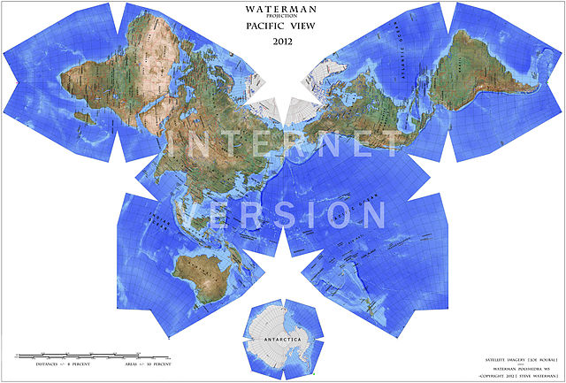

Sistemas de Información Geográfica
Mapas, localización y datos geográficos usando software libre
María Arias de Reyna (@delawen) at GeoCat bv
Quién soy yo y por qué me atrevo a hablar de esto

Matamos Basándonos en los Metadatos
Cómo sobrevivir a un apocalipsis zombie (de gatitos)
¿Qué es un SIG?
Gestión, análisis y visualización de datos espaciales
Almacén de datos geolocalizados

Datos Espaciales
Datos normales + Geometría
Datos Espaciales

Datos Espaciales
WKT (Well Known Text)
POINT (30 30)
LINESTRING(1 1, 5 5, 10 10, 20 20)
POLYGON ((0 0, 10 0, 10 10, 0 0))
WKB (Well Known Binary) 00 00000001 4000000000000000 4010000000000000
Almacenamiento
Ficheros
- JPG, PNG, BMP,...
- GML, KML,...
- GeoPackage
Bases de Datos
- PostGIS
- MySQL Spatial
- H2 Spatial
Fuentes de Datos Libres
OpenStreetMap
IGN (PNOA)

Visualización

Visualización

Proyección Mercator

Proyecciones
Proyecciones
Proyecciones
Proyecciones
Proyecciones EPSG (European Petroleum Survey Group)
Proyecciones
EPSG4326 o EPSG900913
Servidores de Mapas
Estilos parecidos al CSS
WFS/WMS, Teselas, ¿WPS?, ¿Metadatos?
MapServer, GeoServer, Degree
Análisis de Datos
Geoprocesamiento: GDAL, GeoTools
Routing: pgRouting, OSRM
LiDAR: PDAL (GDAL para puntos)
GeoBatch: Flujos de procesamiento
Mapnik: Renderizado de mapas
ISO 19125
WKT, WKB
Contains, Overlaps, Intersects, Area, Distance, Buffer, Intersection
- PostgreSQL -> PostGIS
- H2 -> H2GIS
- SQLite -> Spatialite
- MySQL -> MySQL Spatial
- MongoDB (NoSQL)
CSW (OGC)
geoNetwork
pyCSW
Web Mapping
OpenLayers, Leaflet, ...
Clientes de Escritorio
qGIS
Librerías para Móviles
OSMDroid, Masforge, OsmAnd, PhoneGap - Cordova
¿Os apuntáis a GeoInquietos?

¿Os habéis quedado con más ganas?

Y eso es todo por ahora

Más información en el panorama SIG libre, en el libro libre de GIS libre o en las reuniones de GeoInquietos